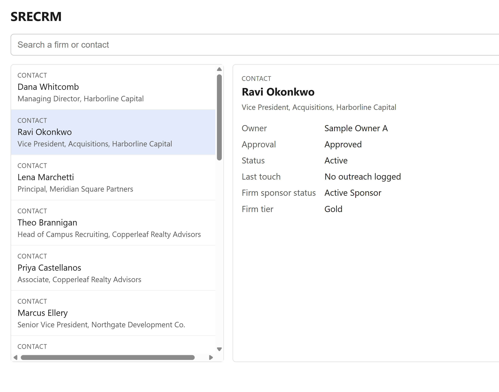
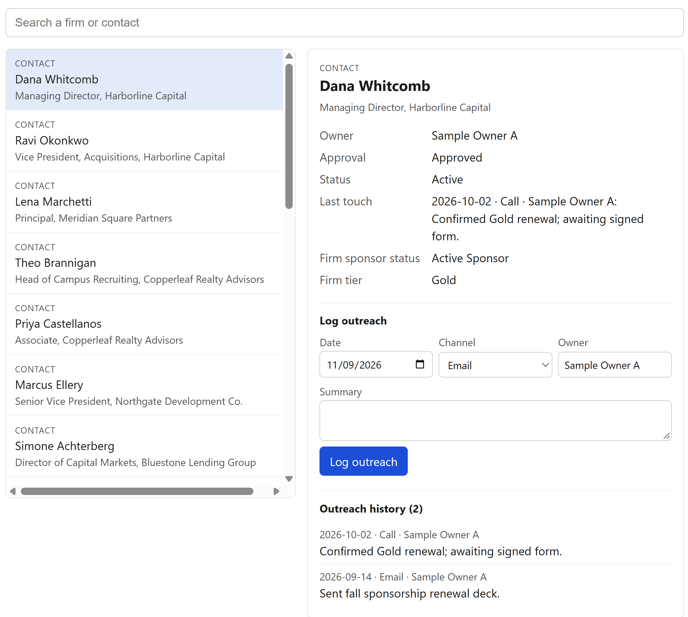

SRECRM
A sponsorship CRM for the NYU Stern Real Estate Club board.
Problem
SREC's sponsorship team tracks firms, contacts and outreach across a shared Google Sheet, Slack, and people's heads. Nobody can quickly see who owns a firm, when we last talked to someone, or whether a contact is cleared to approach, so outreach gets duplicated or stalls.
Who it's for
- The SREC sponsorship team and board (4–6 people), starting with me as AVP of Sponsorships.
- Testers: two or three board members.
- The next AVP inherits it.
What it does / core workflow
- Open the app and search a firm or contact.
- See its history: owner, approval status, last touch, sponsor tier, past events and panels.
- Pick a channel and a template; preview the message with merge fields filled in.
- Send via a mailto link or copy for LinkedIn.
- The outreach is logged automatically with date, channel and owner.


How it's built
- Backend: Node + Express.
- Frontend: plain HTML, CSS and JavaScript.
- Data: the existing Google Sheet stays the source of truth, read through a Google service account (credentials in
.env). The app writes only to log tabs. - Access control: in the app. Google sign-in limited to nyu.edu plus an allowlist (Build 5).
- Build 1: runs on localhost with sample data and no login.
Out of scope (for now)
- Google Drive integration
- Bulk data import (the existing Python pipeline already does this)
- Editing core contact or organization fields in the app (edited in the sheet by design)
- Sending email from the app itself
How I'll know it works
A board member can find a firm and log an outreach in under a minute without asking me.
Measured from Build 2 with PostHog:
- Outreach logged per week
- Distinct weekly users
- Time from open to logged outreach
Build log
November 8, 2026
- What shipped: PRD v1 and Product Page live. Repo scaffolded with AGENTS.md rules (no real data, no secrets).
- Prior work: pre-design summary of the Apps Script version (October 2026).
- Cost: 3 hrs, ~2.0M tokens (mostly cached).
- Next: smallest local prototype (search + detail view with sample data).